Works
ReCast Logo Design
Portfolio
Who is ReCast
ReCast is an iOS app that will (blogs, articles, transcripts etc) in a clean, immersive and distraction less format. It offers the possibility of searching, discovering and following sources (webs, rss feeds, aggregators, Medium etc) for the user to receive a personalized stream of articles to consume clutter-free and easily on the go.

Sketch Phase
During the sketch phase, there were mainly 3 ideas I wanted to execute, which were. 1)To integrate a bookmark icon into the letter R because that is what the software is about 2) To create an abstract R which was inspired because of the way the software can put together posts from different sites and blogs together 3)The software is helping to curate from many other websites and blogs so to show this refining and probably make a logo out of this idea ( I am someone who makes rough sketches first and fixes it in the program so my sketches are not pixel perfect initially in the sketches ) The client will only be shown three versions of the logo which is the most perfect fit for the brand according to the initial discussions.
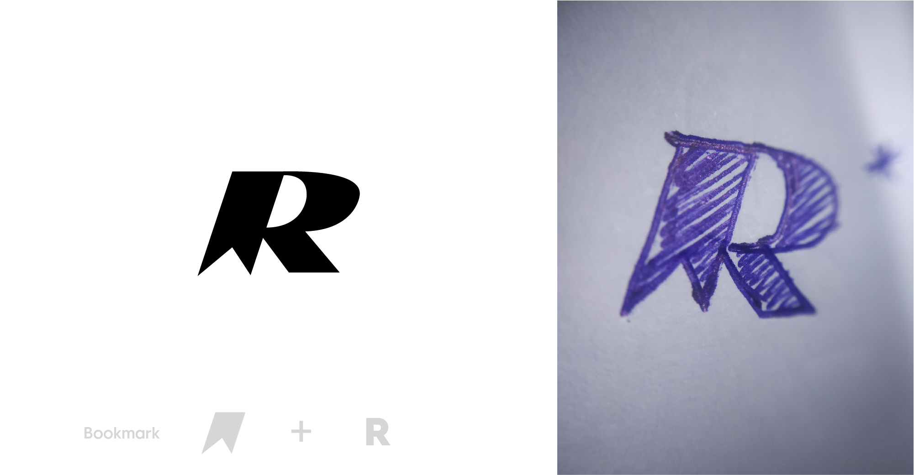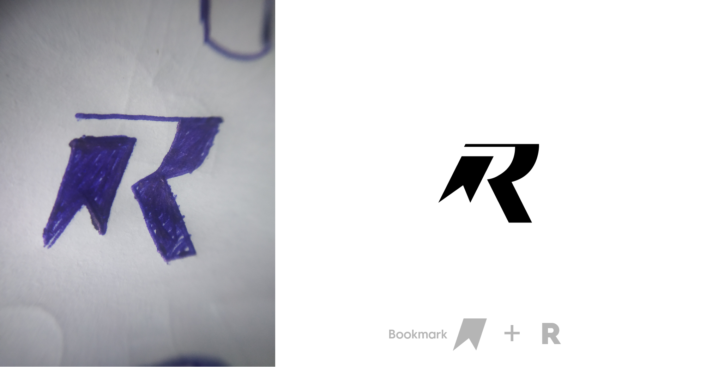
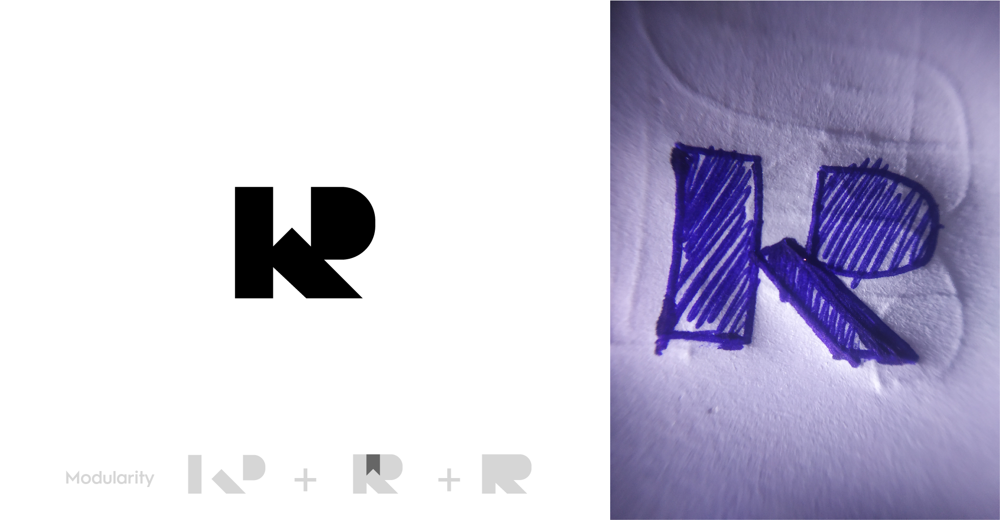
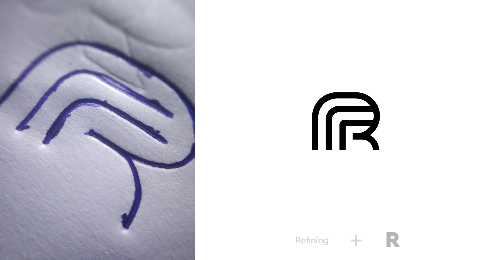
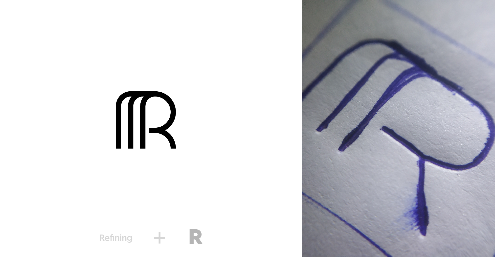
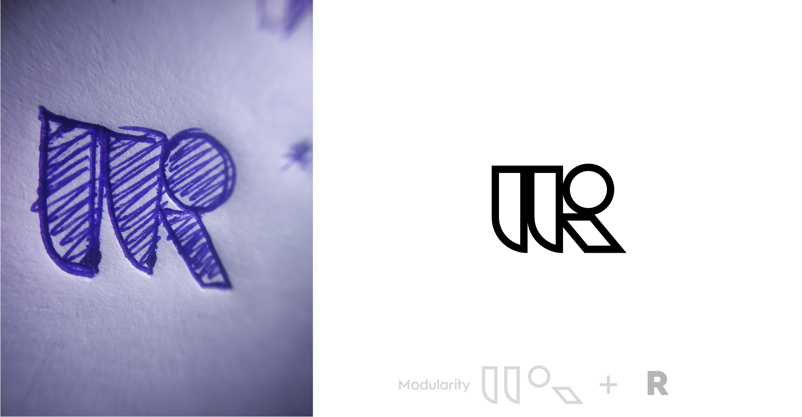
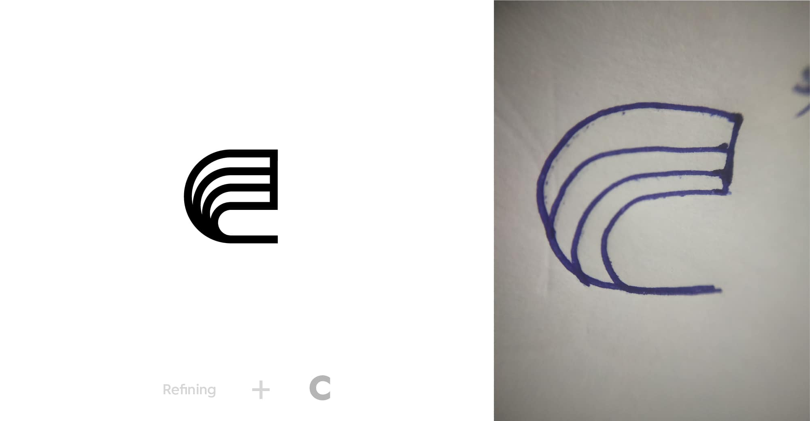
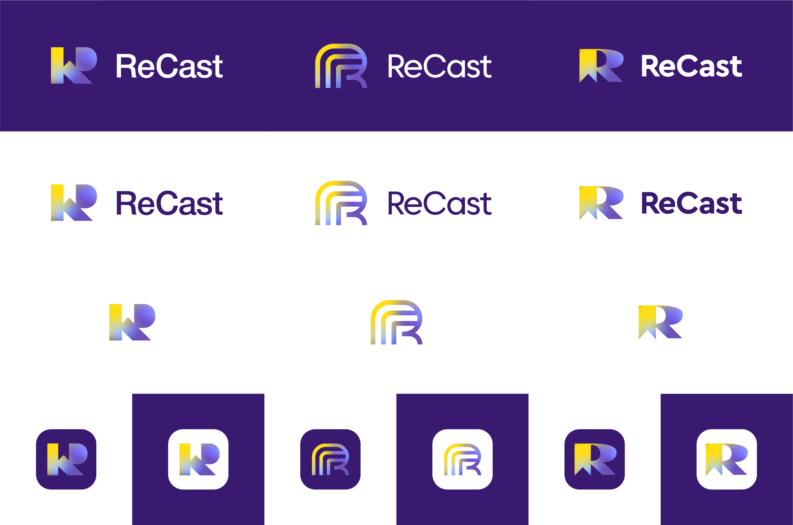
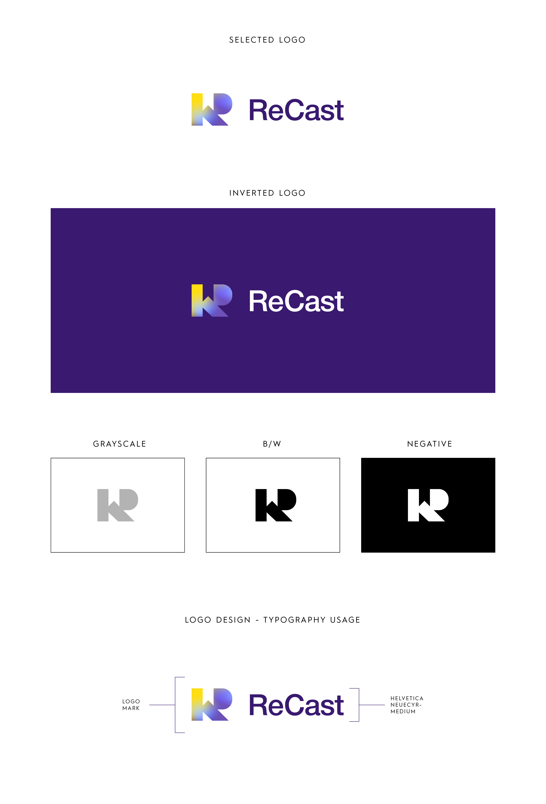
Color Selection
There were 2 factors that influenced the process of selecting the color for ReCast those were.
Factor One
Researching about the color their competitors where using, to stay away from it to make ReCast stand out from their competition
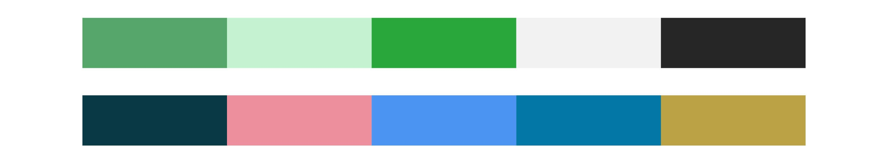These were the color schemes of their competitors
Factor Two
Since we understood the color of their competition the next step was to select the relevant color combination which is different from their competition.
There was a couple of color schemes but this was the colors which were
aligned with the brand values
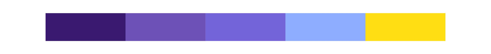
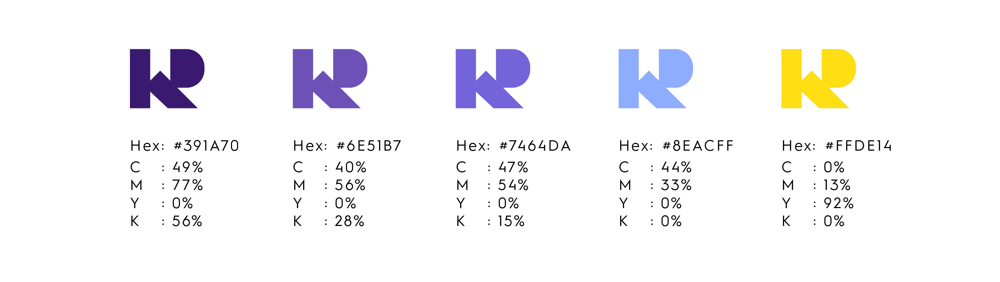
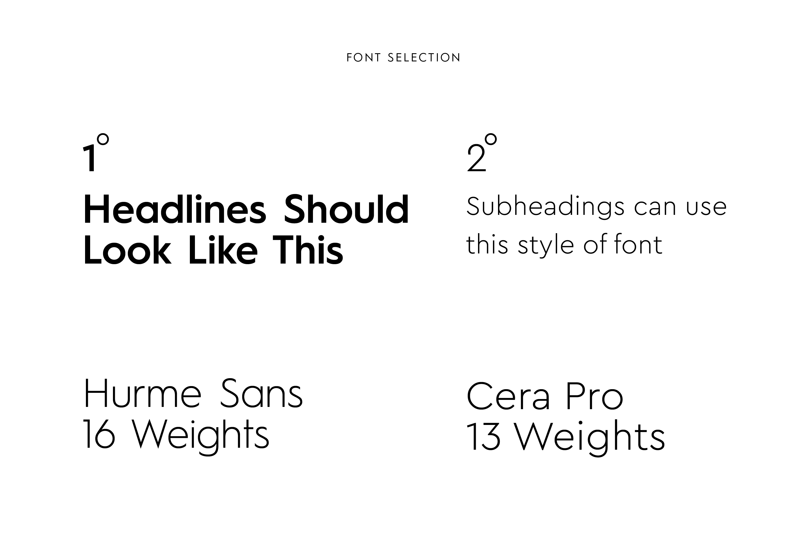
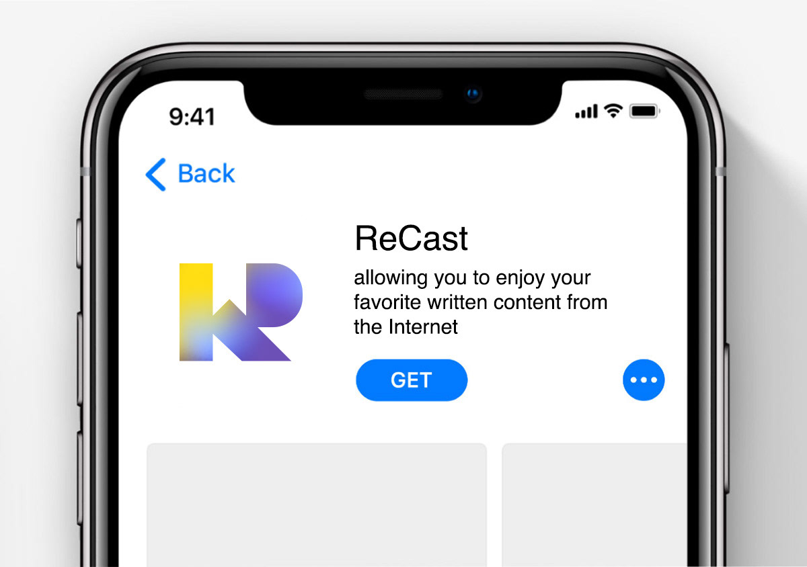